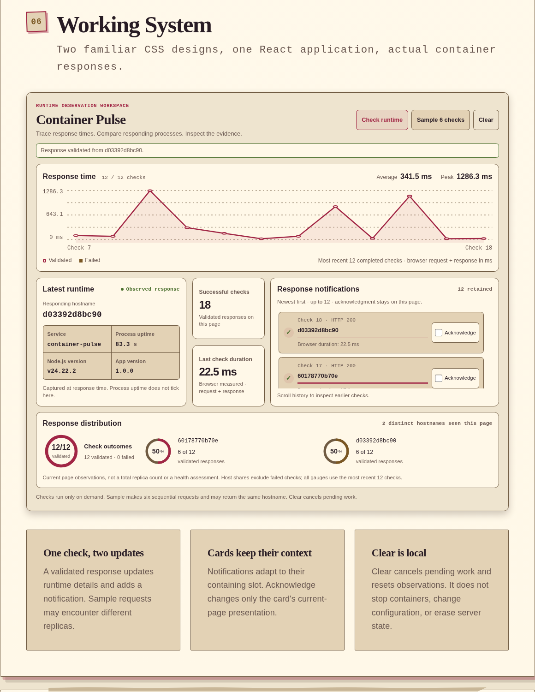

Local Docker application: Working System. Evidence for the compact graph-and-gauge revision; earlier verification remains a separate historical baseline.
Runtime, browser and independent reviews passed. Specification and code/security reviews passed with no blocking findings. Student visual approval, Resume integration, and publication remain separate, unperformed gates.
| Check | Recorded result | Evidence |
|---|---|---|
| Source tests | 68 passed, 0 failed | Node test log |
| Infrastructure/runner tests | 22 passed | Python test log |
| Actual Docker application | 2 → 3 → 2 replicas; restored two healthy replicas; protected Week 5 containers and HTTP identity unchanged | Docker readback and HTTP evidence |
| Graph, gauge, spacing and populated layouts | 206 passed, 0 failed. Chromium and Firefox; seven themes, two modes, seven viewport widths; 18 actual requests per browser verified against the retained 12-check graphs. | Final browser report |
| Served production identity | Actual served HTML, compiled JS/CSS and scoped showcase CSS match the local production build byte-for-byte. | Asset fingerprints |
| Protected source files | 817 unchanged | Preservation result |
| Profile | Performance | Accessibility | Best practices | SEO |
|---|---|---|---|---|
| Mobile emulation | 79 | 100 | 100 | 100 |
| Desktop emulation | 100 | 100 | 100 | 100 |
Performance follow-up: mobile performance measured 79, below the earlier revision’s 97. The run retained Lighthouse’s CPU-calibration warning and reported no runtime error; the cause of the score difference has not been established by a controlled comparison. This is not an all-green performance claim. No unapproved build-system or shared-theme optimization was applied.
Lighthouse CLI 13.6.0 with isolated Playwright Chromium over loopback CDP; simulated mobile/desktop profiles, not physical-device tests. Summary and warnings · Original mobile HTML · Original desktop HTML.
Graphs use the most recent twelve completed page observations. Response time is browser-measured request plus response, not CPU utilization or global traffic. The outcome gauge includes failed checks; per-host shares use only validated responses. Cumulative successful checks and ever-encountered hostname counts have different scopes. Sampling does not establish complete cluster inventory or health.
Earlier failed spacing assertions are preserved in the first graph-matrix report: 156 passes and 50 failed assertions, including rotated-theme geometry and floating-point precision artifacts. The corrected final matrix above supersedes it. The prior broader regression harness recorded 219 passing cases before a 180-second timeout during final screenshot collection; it is incomplete and is not reported as a 220-case pass. Counts overlap and must not be added together.
Desktop, Chromium, light mode:

Mobile: Firefox light-mode screenshot. Full-element screenshots can include the fixed navigation at its captured viewport position; a banner painted over a tall stitched image is not evidence that the cards overlap in normal scrolling.
Independent conclusions: specification and code/security reviews. Source freeze: reviewed-candidate fingerprints. Copied evidence: SHA-256 manifest. No Git commit, public deployment, or academic submission was performed.